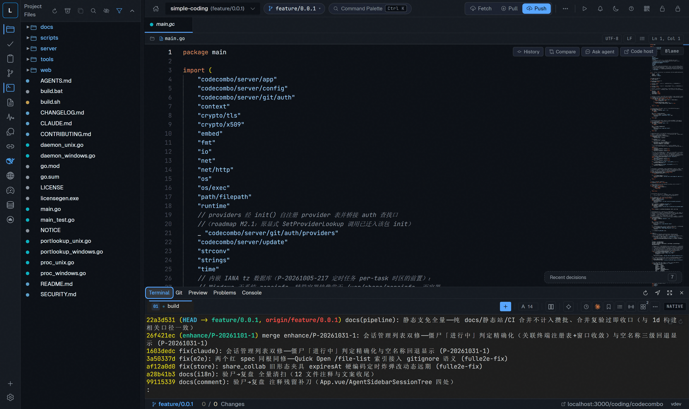

Getting started快速上手
From download to a working workbench: install, set the lock password, add a project — or let an AI agent do it from chat — then keep your sessions across restarts and share results with one link. 从下载到就绪的工作台：安装、设锁密码、添加项目——或者让 AI 智能体 在聊天里代办——重启不丢会话现场，成果一条链接分享。
1 · Install1 · 安装
One command — downloads the latest release, verifies SHA256 and registers
a service. npm i -g codecombo also works (Node.js 18+). Building from source
requires Go 1.26+, Node.js 20.19+ / 22.12+ and Git.
一条命令——下载最新正式版、SHA256 校验并注册服务。
npm i -g codecombo 也可以（需 Node.js 18+）。从源码构建需 Go 1.26+、
Node.js 20.19+ / 22.12+、Git。
p=$(mktemp) && curl -fsSL --retry 3 https://raw.githubusercontent.com/wtr20211202/codecombo/main/scripts/install.sh -o "$p" && sh "$p"; rm -f "$p"# Linux / macOS — installs + service
$p="$env:TEMP\codecombo-install-$([guid]::NewGuid()).ps1";[Net.ServicePointManager]::SecurityProtocol='Tls12';(New-Object Net.WebClient).DownloadFile('https://raw.githubusercontent.com/wtr20211202/codecombo/main/scripts/install.ps1',$p);powershell -NoProfile -ExecutionPolicy Bypass -File "$p";Remove-Item "$p" -ErrorAction SilentlyContinue# Windows PowerShell — downloads to a temp file, verifies, runs
npm i -g codecombo@next# or via npm (Node.js 18+)
p=$(mktemp) && curl -fsSL --retry 3 https://ghproxy.net/https://raw.githubusercontent.com/wtr20211202/codecombo/main/scripts/install.sh -o "$p" && sh "$p"; rm -f "$p"# or via mirror — when raw.githubusercontent.com is unreachable (CN networks)# 或走镜像——raw.githubusercontent.com 不可达时（CN 网络常见）
Installed via npm? The in-app updater steps aside for this install shape — updating means re-running the install command (always the newest build). Details in the FAQ. 用 npm 安装的？该安装形态的应用内更新器自动让位——更新 = 重跑安装命令（恒为最新版）。详见常见问题。
Behind a restrictive network? The last command rides the
ghproxy.net mirror prefix. The sentinel check + SHA256 verification protect
against truncated or corrupted transfers — not against a malicious mirror rewriting the
content (an altered script that keeps the trailing sentinel still passes; a
SHA256SUMS manifest fetched through the same mirror can be swapped too).
For integrity-sensitive setups prefer the official link or npm (the registry has
integrity mechanisms). The Windows one-liner has no mirror variant yet.
网络受限？最后一条命令走 ghproxy.net 镜像前缀。
哨兵自检 + SHA256 校验防传输截断/损坏——不防镜像恶意改写内容（正文被改但保留尾部
哨兵仍可通过校验；SHA256SUMS 清单同走镜像时校验基准可被一并调包）。
完整性敏感场景首选官方直连或 npm（registry 自带完整性机制）。Windows 一键命令
暂无镜像形态。
Registering the service needs elevation (admin PowerShell / sudo); without it you still get the binary plus a manual start command (runs as a background daemon). 注册服务需要提权（管理员 PowerShell / sudo）；不提权则安装二进制并给出 手动启动命令（后台守护运行）。
Second instance next to an existing one? Give it its own port and data
directory (CODECOMBO_PORT / CODECOMBO_DATA_DIR at install time) —
two instances must never share one data directory. Details in the
FAQ.
要在已有实例旁边再装一套？给它独立的端口和数据目录（安装时
CODECOMBO_PORT / CODECOMBO_DATA_DIR）——两个实例绝不能共用
一个数据目录。详见常见问题。
2 · First start: set the lock password2 · 首次启动：设置锁密码
codecombo start# daemon mode (script / npm installs)
http://localhost:9999# first visit asks for the lock password# 首次访问会要求设置锁密码
The lock password is the gate for the whole workbench — UI, API and terminals. It lives in the data directory and survives upgrades and re-installs. 锁密码是整个工作台的门——UI、API 与终端都过这道门。它存在数据目录里， 升级与重装都不会丢。
Headless box? First-time setup is a credential-claiming
operation, so it is allowed from localhost only. When the server is bound
to all interfaces (codecombo start -H 0.0.0.0), the setup can be completed
from another machine on the LAN — the setup page tells you when that applies.
无头服务器？首次设密属于凭证占位操作，默认只允许从
localhost 完成。服务以通配地址启动（codecombo start -H 0.0.0.0）
时，可以在局域网另一台机器上完成设密——适用时设置页会明确提示。
codecombo reset-lock# forgot the password? run on the machine# 忘记密码？在机器上执行
3 · Add a project3 · 添加项目
A project is a Git repository on the machine running Codecombo. Add one from the UI: pick a local repo, or paste a URL to clone it into place. 项目 = 运行 Codecombo 这台机器上的一个 Git 仓库。在界面里添加：选一个 本地仓库，或贴一个 URL 就地克隆。
Prerequisite: the project path must be a Git repository — run
git init (or clone) first if it isn't one yet. This holds no matter who adds
the project: you in the UI, or an agent over the ops channel.
前置条件：项目路径必须是一个 Git 仓库——还不是的话先
git init（或先克隆）。无论谁来添加都一样：你在界面里加，或智能体经
ops 通道加。

4 · Or let an agent set everything up4 · 或者，让智能体全部代办
Skip the forms. Open an agent session — starting one needs no project — and just say it in chat: “Add every repo under my projects folder as a project and set each one up.” The agent drives the same APIs the UI uses: listing and adding projects, cloning what's missing, then configuring each one. 可以不填表单。开一个智能体会话——开会话本身不需要任何项目—— 然后在聊天里直接说：「把我项目目录下的每个仓库都添加成项目，并逐个配置好。」 智能体调用的正是界面所用的同一组 API：列出与添加项目、缺仓库就先克隆，再逐个配置。
-
The session talks to the workbench out of the box: its access token
and API base URL are injected as environment variables (
CC_LOCK_TOKEN/CC_BASE_URL) — nothing to copy or paste. 会话开箱即可驱动工作台：访问令牌与 API 基址以环境变量注入 （CC_LOCK_TOKEN/CC_BASE_URL）——无需复制粘贴任何密钥。 -
The full API surface is documented in the ops manual, served
by your own instance at
/ops-manual— the agent reads it from there, so its knowledge matches your running version. 完整 API 面在 ops 手册里，由你自己的实例在/ops-manual提供——智能体也从那里读，手册与运行版本永远一致。 -
Guardrails carry over: a project path must be a Git repository (the
agent can
git initor clone first), and high-risk actions — mass deletes, force pushes, batch replacements — come back as approval cards. You approve, deny or edit per item, with a live terminal recording attached. 护栏照旧生效：项目路径必须是 Git 仓库（智能体会先git init或克隆）；高危动作——批量删除、强推、批量替换——以审批卡回流，逐条允许、拒绝 或改写，并附实时终端录像。

Module-by-module detail — sessions, the ops channel and approvals — lives in the features guide: Agent sessions · Approval center. 会话、ops 通道与审批的逐模块详解在功能全览里： 终端会话管理 · 审批中心。
5 · Restart without losing the day5 · 重启不丢现场
A power cut or reboot mid-task kills terminal processes — not the work. Sessions persist across service restarts (persistent terminal backends keep them alive), and every session keeps a full, replayable output history. Open Codecombo and tell any agent: “restore my previous sessions.” Each project's sessions come back the way they were, with the whole output readable and replayable from the session timeline. 断电或重启会杀掉终端进程——但杀不掉活儿。会话跨服务重启持久存在 （持久化终端后端让它们存活），每个会话都保留完整可回放的输出历史。打开 Codecombo， 对任意智能体说一句：「恢复我之前的会话。」每个项目的会话原样回来，全部输出 可在会话时间线里回看与回放。
The web terminal and its persistence switches are mapped in the features guide: Web terminal. Web 终端与其持久化开关的模块详解在功能全览里： Web 终端。